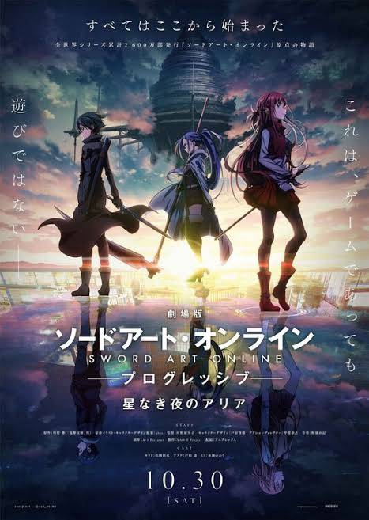
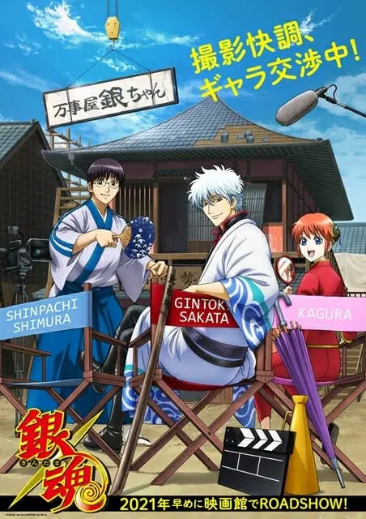
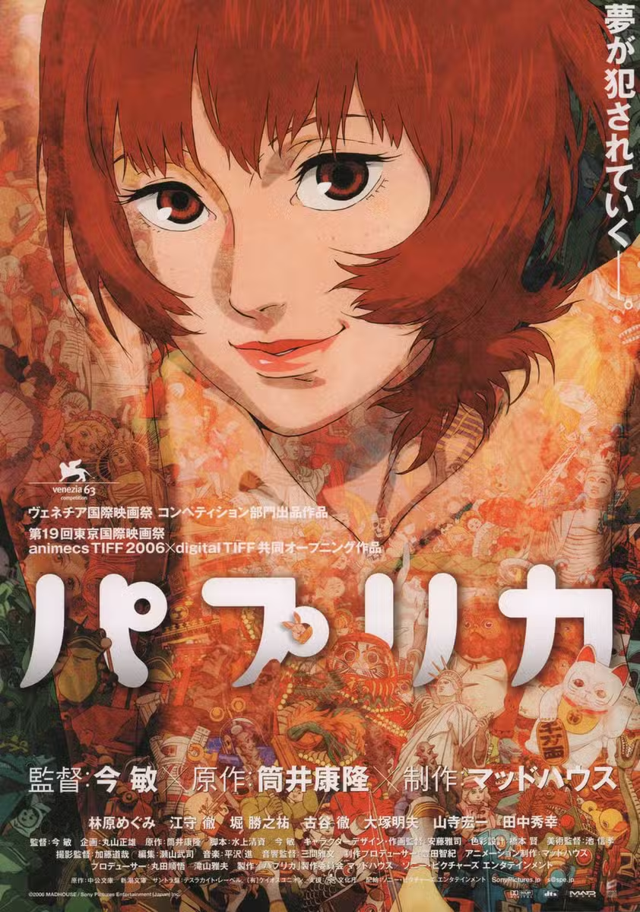
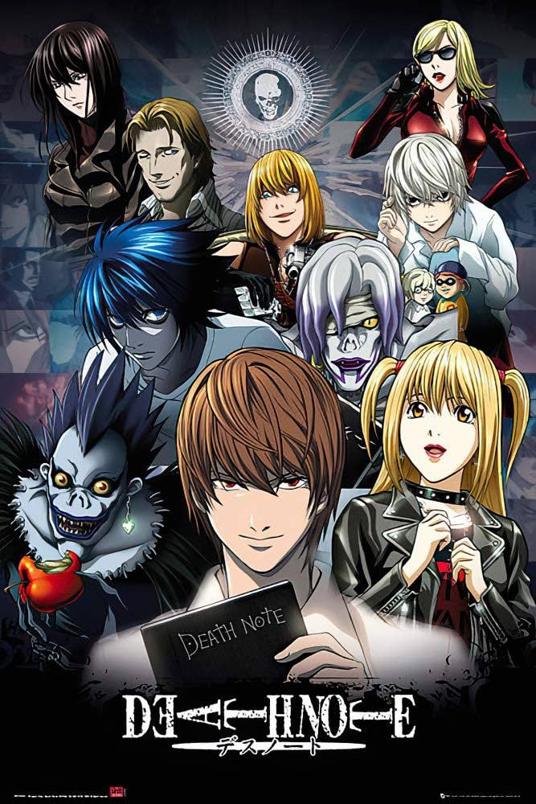
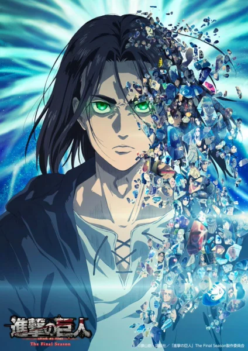
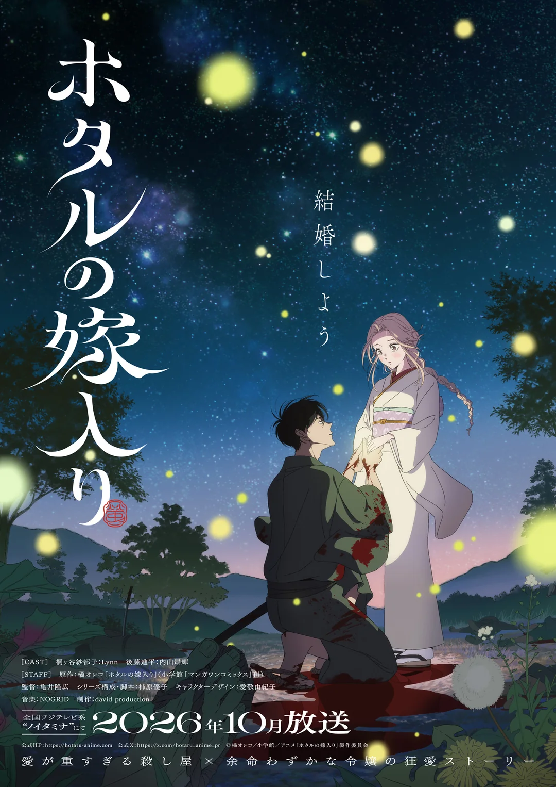

Sword Art Online★ 5.0
4.8/ 5.0 (281 đánh giá) | 1h 50m • 2025 | Shonen, Hành động, Siêu nhiên
Khám phá các tựa anime mới được thêm vào thư viện của chúng tôi, được sắp xếp theo thời gian tạo
Xem tất cả ↗Được đánh giá cao nhất dựa theo bình chọn của cộng đồng
Xem tất cả ↗




